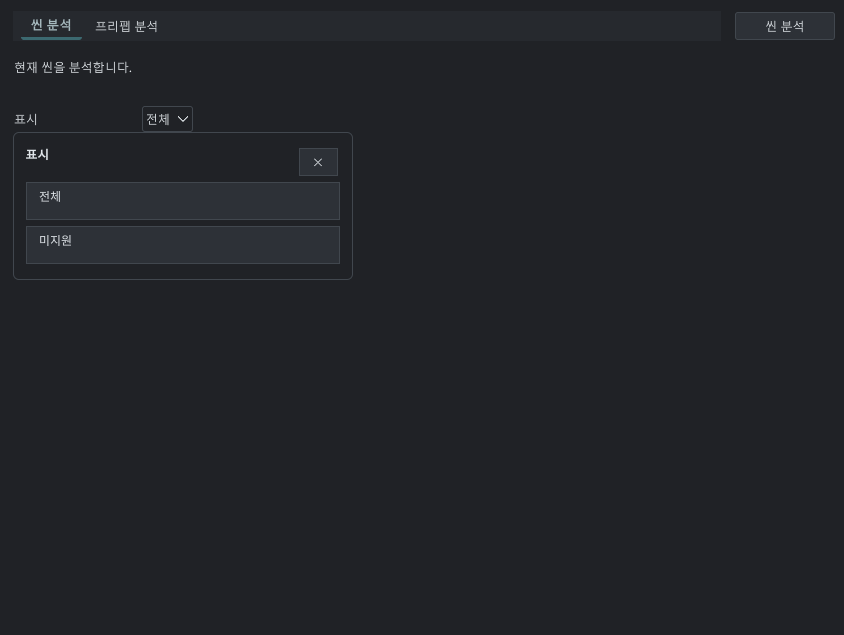

Tracefolio REPORTS & ISSUES
Tracefolio REPORTS & ISSUES분석 화면의 인라인 필터와 안내 문구 정리
검증 대기큰 필터 팝업을 미지원만 보기 토글로 바꾸고 분석 목적·결과·빈 상태 안내를 구체화했습니다.
작업 결과
분석 결과 줄에 미지원만 보기 토글을 배치해 두 항목짜리 팝업을 제거했습니다. 분석 전·미지원 없음·대상 없음 상태를 구분해 다음 행동을 안내합니다.
변경 내용
적용 내용
씬과 프리팹의 검사 범위를 각각 설명하고, 미지원 사유와 오브젝트 위치 확인 방법을 안내합니다. 미리보기 분석은 에셋을 변경하지 않으며 실제 변환은 옵션을 켠 빌드 때 반영되고 빌드 기록에서 확인한다는 문장을 추가했습니다. 안내 제목·본문과 결과 툴바의 여백·위계를 정리했습니다. UXML에서 편집 가능한 일반 텍스트이며 헬프박스를 사용하지 않습니다. 기존 씬/프리팹 가로 탐색과 선택/이동 동작은 유지합니다.
검증
검사 근거. 7개 어셈블리 Roslyn 컴파일, UXML 토글와 필터 연결, 9개 언어 키, 문서 9개 및 로컬 링크 126개 통과. 패키지 400개 에셋 원본 바이트 대조 통과. SHA-256 bcb21da9cc6141dcda80d04459a6a4d69c6ef44f0877f70d937e57cff02b9203. 화면 조작, 에디터 명령, 플레이어 빌드는 실행하지 않았습니다.
수정 전: 사용자가 제공한 실제 화면 원본(845×635, 13,053바이트). 두 항목 선택을 위해 큰 팝업이 열린 상태입니다.

남은 사항
사용자 화면 조작 금지 지시에 따라 수정 후 실제 화면 캡처와 마우스/키보드 검증은 미실행입니다. 전후 화면 비교 완료로 표시하지 않습니다. 실제 공유 테마의 밝은/어두운 화면 검증과 이전 미리보기·맵 검증도 남아 있습니다. 교훈 검토: 단순 이진 필터는 보조 탐색 탭이나 큰 선택 팝업을 늘리지 않는 방식으로 정리했습니다. 이번 UI 판단은 프로젝트 메뉴얼에 기록하며 보편적인 전역 금지 규칙을 추가하지 않습니다.
작업 시간
- 제안 시간: 5~10분 · 시작 2026-11-02 23:44:10 KST
- 실제로 완료된 시간: 소스·번역·컴파일·패키지 반영 2분 57초 · 2026-11-02 23:47:07 KST. 기록 게시/배포는 이후 별도 확인.
- XERJ: 실패 — Xerj.ps1 Status에서 XERJ node is not running 확인. rg와 현재 소스로 확인했습니다.